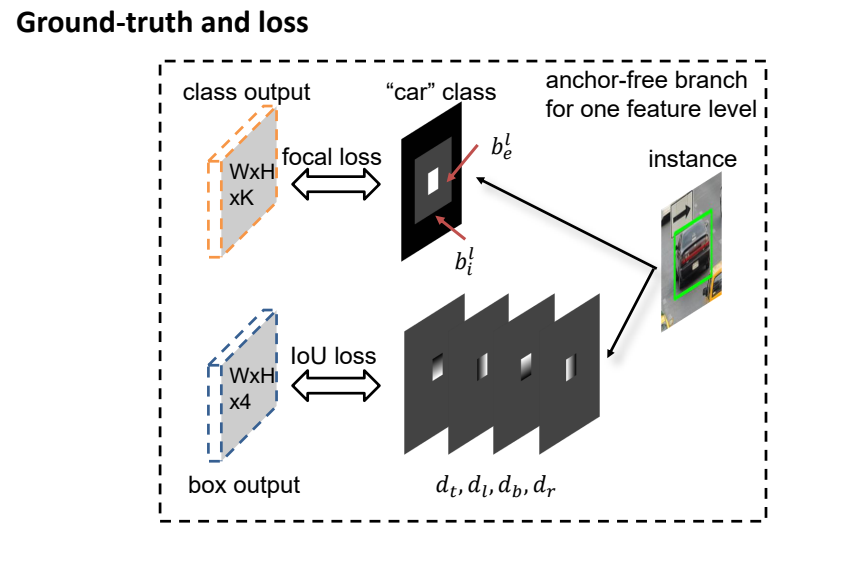

FSAF: Feature Selective Anchor-Free Module for Single-Shot Object Detection
作者团队：卡内基梅隆大学（CMU）
原文链接：https://arxiv.org/abs/1903.00621
repo：未开源
说在前面
近些年，在目标检测领域中，FPN+Anchor成为了各种网络的标配。我们知道，在FPN结构的特征金字塔网络中，浅层的网络层有更高的分辨率，适合检测较大的物体，深层的网络层有更多的语义信息，适合对小目标进行检测。但是在FPN中，隐藏着一个极其隐蔽的问题，不同尺寸大小的物体依靠其与FPN每一层Anchor的适配程度，分配到不同分辨率的层上进行学习。这种机制完全是heuristic-guilded，但是不一定是最合适的。
动机
目标检测中一个重要的挑战就是尺度变换，为了解决尺度变换的问题，也诞生出了许多结构或者网络模型。比如，图像金字塔、SSD、FPN等。另外一种解决方法就是在feature map上遍历anchor，anchor最早在faster-rcnn中提出。我们会定义一系列稠密的均匀分布的anchor，这些anchor会根据其不同的尺寸大小和不同的feature map联系起来。在带有FPN的backbone中，高层的feature map分辨率高，得到的anchor数量多尺寸小，浅层的feature map分辨率低，得到的anchor数量少尺寸大，anchor的生成是根据feature map不同而定义的。在anchor match gt阶段，gt与anchor匹配，确定gt归属于哪些anchor，这个过程隐式的决定了gt会由哪层feature map负责预测。不管是生成anchor还是gt match 过程，都是由size这个变量决定，虽然我们会设定先验的规则来选择最好的feature map，但存在的问题是，仅仅利用size来决定哪些feature map来检测物体是一种暴力的做法。如下图所示，60x60大小的car和50x50大小的car被分在了不同feature map，50x50和40x40的被分在了同一级feature map，谁也不能证明这种做法不好，但谁也不能证明这种做法就是最好，那么何不让模型自动学习选择合适的feature 去做预测呢？
FASF模块
模型总览
文章中提出了FSAF模块来让模型自动选择最合适的feature，不用再依赖与anchor box，所以是一种anchor free目标检测方法，模型如下图所示。FSAF网络以RetinaNet网络为基础，既可以与RetinaNet原有的reg与cls分支并行，也可以单独使用。同样地，FSAF模块也可以嵌入到如SSD、DSSD等one stage网络结构中。
更为详细的结构如下图所示，基于RetinaNet，FSAF模块又引入了两个卷积层，分别负责分类与回归。FSAF的分类网络接在RentinaNet的class subnet后面，w×h×4，激活函数sigmod；同样的回归网络在box subnet后，w×h×4，激活函数为Relu。并且经过测试，FSAF对模型运行速度并无太大影响。
Ground-truth and loss
在介绍监督信号之前，先定义几个变量
分类

- 有效区域，即白色区域，gt表示为1；
- 忽略区域减去有效区域，即灰色区域，梯度不回传，忽略；
- 其他，即黑色区域，gt表示为0；
特别的，当一个有效区域中存在两个实例时，小的实例更受关注，这点与FCOS类似。回归
回归过程与其他anchor based方法类似，得到与坐标（x, y）相关的四个偏移量，但是值得注意的是，最后的输出除以了S，文中S的大小定为4.0，不知为何？decode过程为：在线选择模块
FSAF的核心起始就是在线选择模块，文中作者采用的在线选择模块方法是在所有feature level中选择loss最小的作为梯度反传。结果
总结
起初，看这篇文章的原因是因为被文章的题目吸引，在题目中，作者指出了这是一种anchor free的方法。读完之后，的确，这是一个舍弃或者半舍弃anchor的方法，但是，作者更想表达的是FSAF即自动选择特征模块的重要性。加入一个不太影响速度的模块，无痛涨点，在线选择特征，给人很大启发。但文中坑还有很多，关于有效区域与忽略区域，S值，在线选择模块等都有未说清楚的地方。最最最关键的是！！！最最最关键的是！！！最最最关键的是！！！
未开源😭!!!参考
https://zhuanlan.zhihu.com/p/58508985